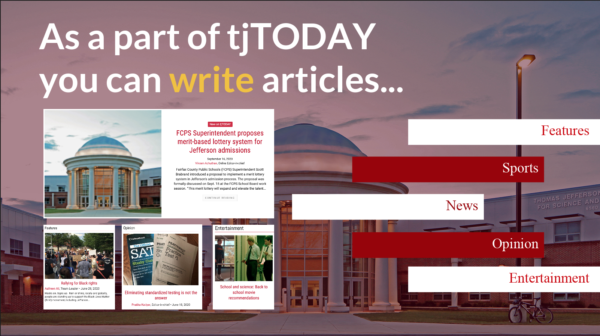
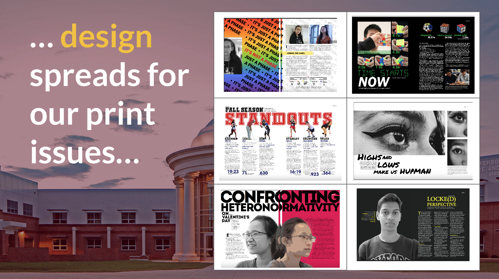
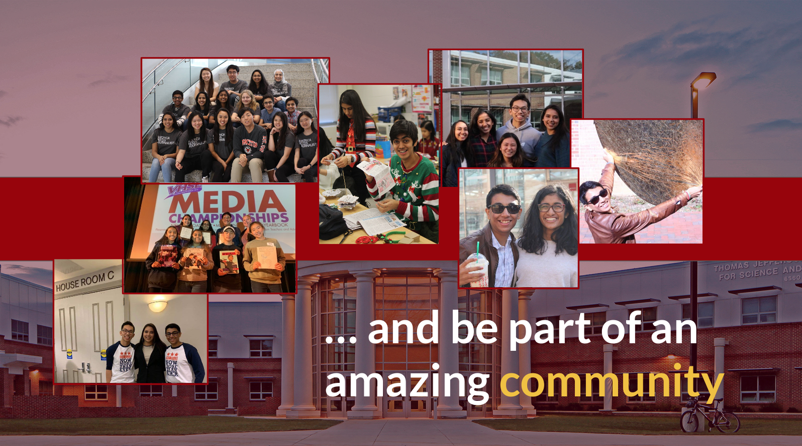
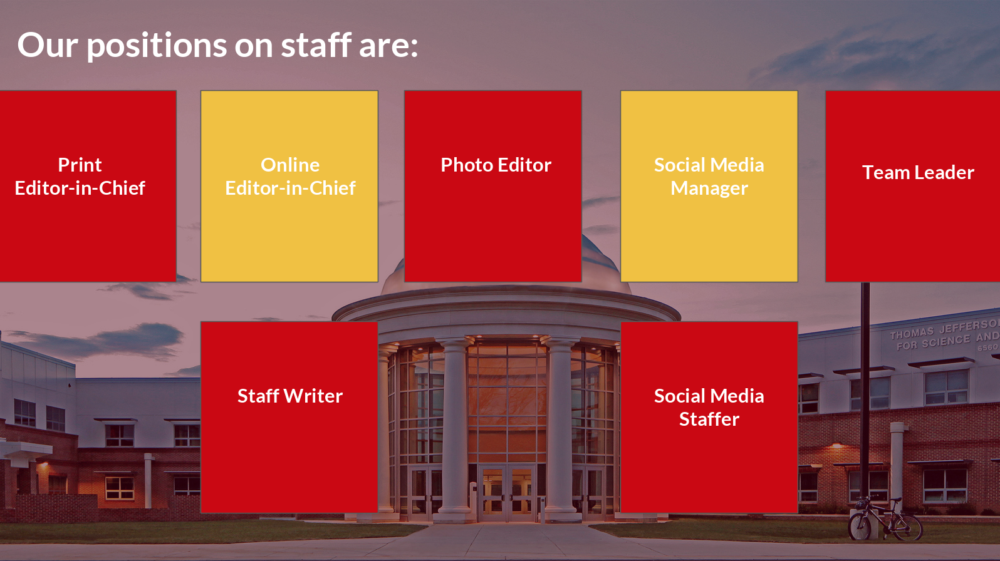
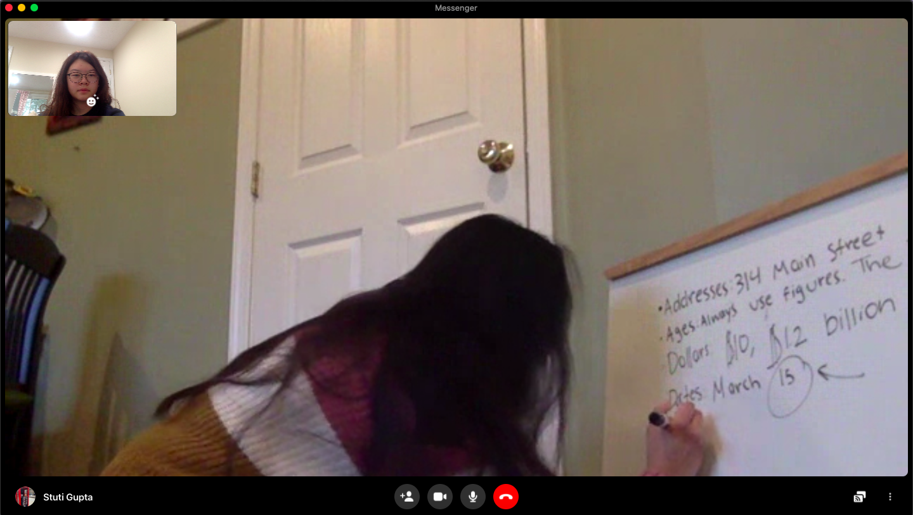

Audience and Recruitment
Audience
The audience plays a significant factor in how I package and advertise my articles. I experiment with multimedia to pique the readers’ interests in new and exciting ways.
Click here to view my “Web and Social Media” page, where I go into more detail on some of the forms of multimedia that I often use.
Recruitment
During the virtual activities fair, I worked with the tjTODAY staff members to create a slide deck to get newcomers interested in and excited about what tjTODAY has to offer.
   Click here to view the slide deck.
Additionally, I always strive to build a positive environment in which current staffers feel encouraged to return to the team the following year. I reach out to the staffers often to check-in with them about how they are doing both personally and in terms of journalistic work. We are friends first and foremost, a deep collaboration that transcends into the journalistic work that we carry out as a team.
